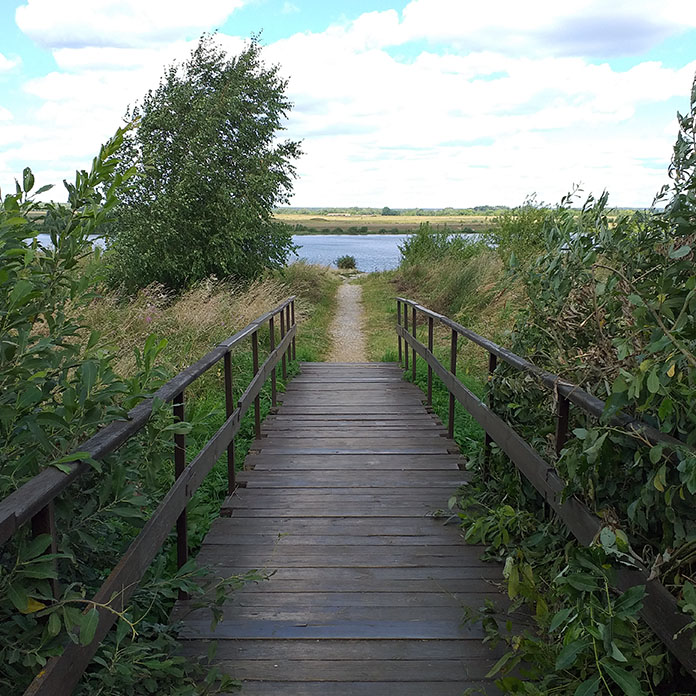
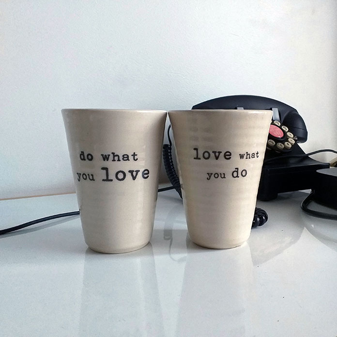
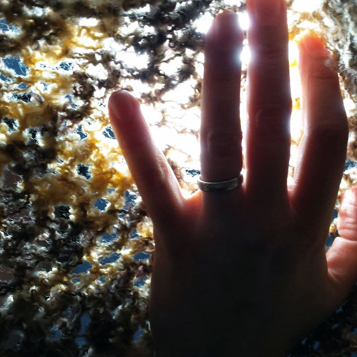
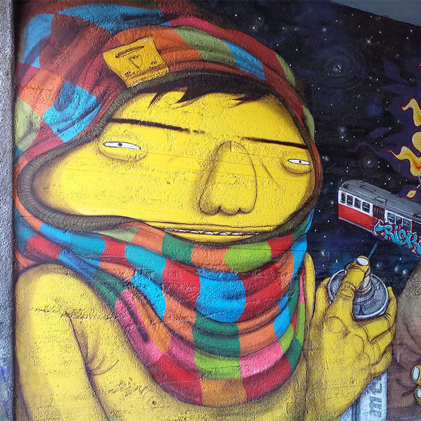
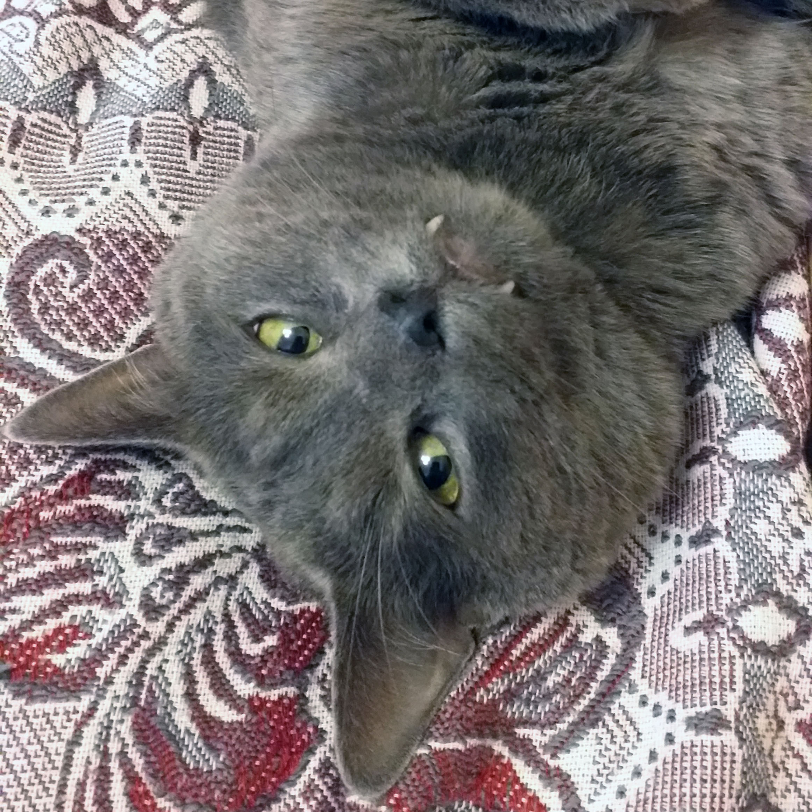
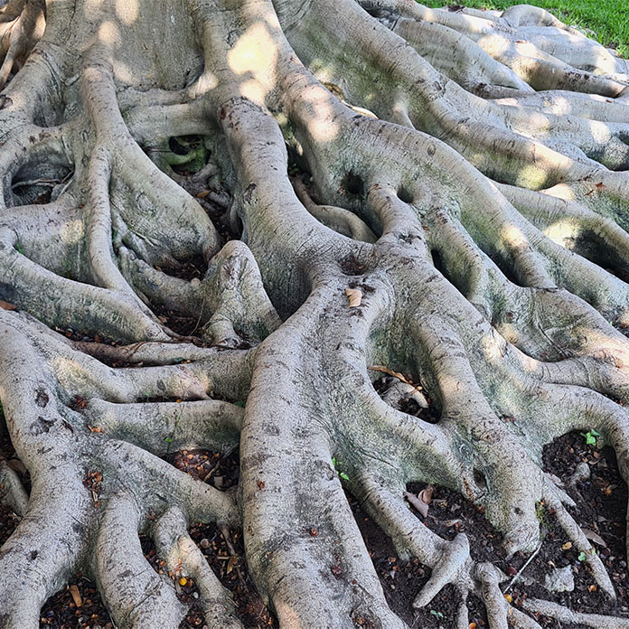
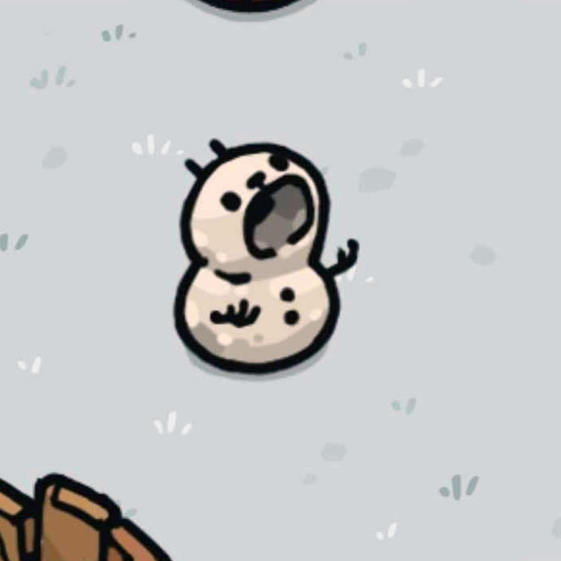
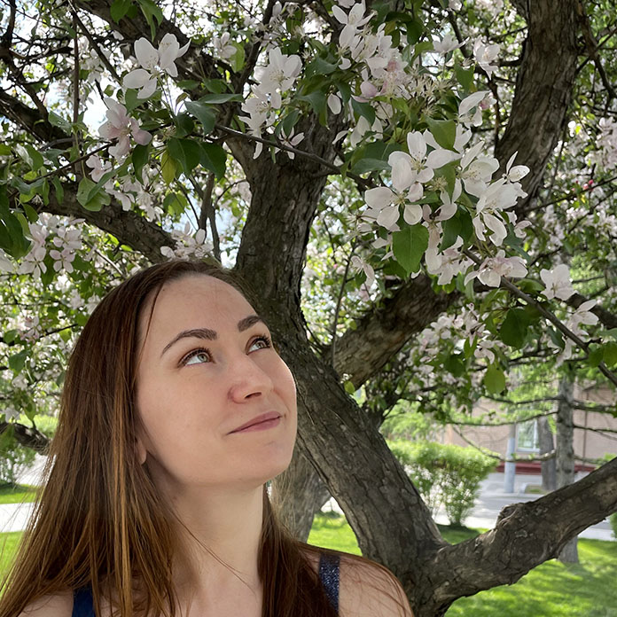

Фритрек и нулевой спринт: Подготовка к работе
<Steady>
Это было самое начало пути. На этом этапе важно было проникнуться основами и настроиться на учёбу. И, возможно, подумать, как новые знания могут повлиять на ваше будущее.
Повторение, возвращение и предвкушение. Хотелось скорее приступить к учебе и актуализировать свой бэкграунд. Но я даже не представляла насколько все изменилось за несколько лет, и сколько нового мне предстоит узнать!
1 спринт: Я — чистый лист
<Ready>
На первых этапах мы работали со страхами и сомнениями, которые часто испытывают новички. Один из них — страх перед чистым листом. Это, конечно же, намного сложнее, чем боязнь куска бумаги. Часто за этим ощущением скрываются более глубокие вопросы: с чего начать? а вдруг будет слишком сложно? что, если я не справлюсь?
Нет, нет, таких мыслей точно не было. Я справлюсь. С чем только не приходилось разбираться и справляться в бытность работы программистом в IT сфере. Учеба увлекла, особенно то, что все сразу можно было применять на практике.
1 спринт: А если не получится?
<Go>
Первый проект — позади! Но это всё ещё самое начало пути. Радость могла быстро померкнуть и смениться ожиданием провала. Или вы, наоборот, могли вдохновиться успехами и поверить в себя.
От первого проекта осталось впечатление, что меня за ручку провели, не получиться не могло, успехам радуешься, степень заинтересованности растет.
2 спринт: Погоня за идеалом
<See>
На этом этапе вы уже достаточно разбирались в основах вёрстки, чтобы понять, как много ещё впереди. Вы могли попытаться погнаться за идеалом и понять, что он недостижим. А, может, вы вовсе и не подвержены перфекционизму и вместо того, чтобы сделать идеально, старались просто сделать.
Перфекционизм рулит. Этот спринт прошел достаточно ровно, хотя нарастающий объем информации начинал немного давить. Так хотелось уложиться в сроки и получить обратную связь от ревьювера. И я сделала это.
2 спринт: О тех, кто рядом
<Care>
Всё это время вы были не одиноки (хотя, возможно, иногда и чувствовали, что одни против целого мира). Вас окружали одногруппники, команда сопровождения и просто близкие люди, которым можно пожаловаться, если очередной макет просто так не поддавался. Осваивать что-то новое легче, когда рядом есть единомышленники, не правда ли?
Поддержка куратора - есть. Поддержка наставника - есть. Вообщем это здорово, когда есть кому задать вопрос, так как живого человека с опытом и знаниями не заменит поискоивик.
3 спринт: Обходные стратегии
<I can>
На этом курсе вы постоянно решали разные задачи. В какой-то момент вам могло показаться, что решения просто иссякли. Значит, пришло время посмотреть на задачу под другим углом.
Вот тут началось все самое интересное. Мозг кипел от объемов информации, но нужные навыки уже сформировались, поэтому без паники, без паники... Все получилось.
3 спринт: Когда опускаются руки
<Time__Management>
Во время учёбы часто возникает чувство, когда не знаешь, за что хвататься. Вроде и проектную пора сдавать, и задачи хочется порешать, и в теории получше разобраться, и жизнь не забыть пожить. В такие моменты очень нужна концентрация. Вспомните, откуда вы её черпали.
Да, бывает такое состояние. Мне помогает более жесткое планирование своего дня и списки дел.
«Сейчас я здесь»
<Get a job>
Сейчас вы уже очень много знаете о вёрстке. Но это только начало. Во-первых, впереди ещё много материала про «красотищу». Во-вторых, с окончанием курса учёба не заканчивается. Вёрстка — это целый мир. И этот мир постоянно меняется. Познать его полностью не получится, но это тот случай, когда важен сам процесс познания. Ведь часто путь — и есть результат.
Хочется продолжать, хочется и дальше изучать этот мир уже не на учебных, а на реальных проектах. Ищу работу.